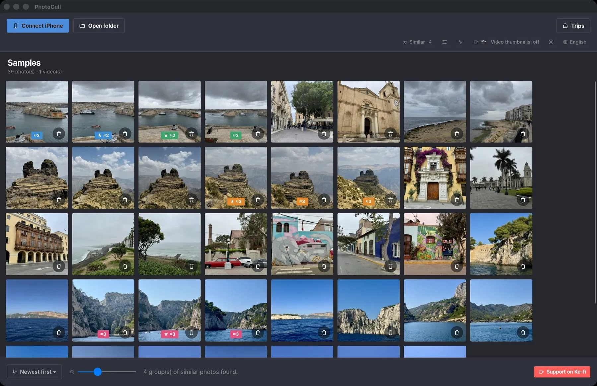
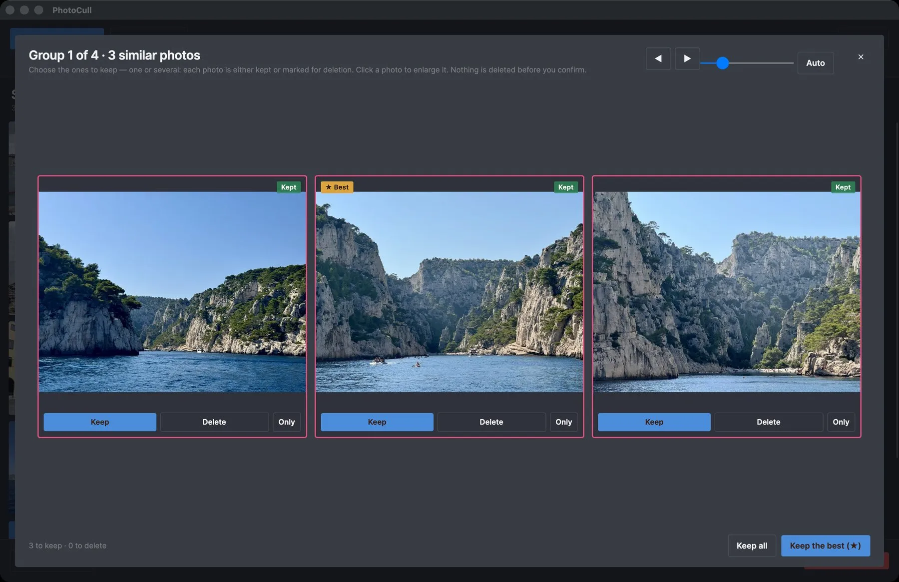
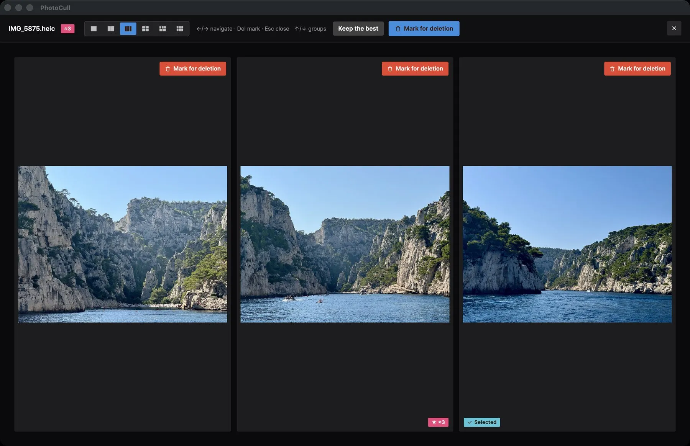

Sort thousands of iPhone photos on your Mac or PC
PhotoCull is a full desktop application: it shows your entire iPhone camera roll grouped by trip, compares your photos side by side, and bulk-deletes what's no longer worth keeping — right from your Mac or PC.

A look at the app


What the app does
The "Trips" view
Your entire photo library automatically grouped by trip (time AND location, just like the iOS app) — spot at a glance which trips take up the most space.
Side-by-side comparison
Show up to 6 similar photos at once to pick the best one — perfect for sorting through bursts and near-duplicates.
Safe bulk deletion
Mark hundreds of photos in a few clicks. The actual deletion goes through the companion app on your iPhone and “Recently Deleted” (30 days) — never an immediate permanent delete.
The size that counts
Sort and filter by single-day trip, by excluded place (home, work...), by size — the same filters as the iOS app, built for speed.
Direct connection to your iPhone
Plug in your iPhone via USB (or use simulation mode to try it out): PhotoCull reads your camera roll directly, with no iCloud and no server involved.
100% on-device
No photo, no GPS location is ever sent anywhere. Place recognition runs entirely locally, with no account and no subscription.
Free, with two one-time upgrades
No subscription, ever. Browsing, comparing and sorting are always free. The plans only set how many photos you can delete per day.
Free
$0
Browse, compare and sort everything. Delete 3 times a day on the iPhone, and up to 6 photos a day from the Mac.
Pro
$4.99 · one time
Unlimited deletion on the iPhone, unlimited custom places and bulk actions across trips. Up to 15 photos a day from the Mac.
Pro + Desktop
$24.99 · one time
Everything in Pro, plus unlimited deletion from PhotoCull on your Mac.
Prices in USD; the App Store shows them in your currency. You buy in the TripSweep iOS app and PhotoCull follows through your iPhone. Sorting a folder on your Mac is never limited.
Pairs with the TripSweep iOS app
Browsing, comparing and sorting your iPhone's photos works on its own: just plug it in via USB. To actually delete photos from the iPhone, you also need the free TripSweep iOS app, which applies the deletion on the phone through “Recently Deleted” and makes trip analysis near-instant. Folders on your Mac or PC can be sorted without it.
Guides to sort your photos on a computer
How to sort your iPhone photos on a Mac
Sort thousands of iPhone photos on your Mac: what Photos and Image Capture can and can't do, and a faster way to group, compare and delete.
How to sort your iPhone photos on a Windows PC
Sort thousands of iPhone photos on Windows 10 or 11: what the Photos app and File Explorer show, and a faster way to group, compare and delete.
How to sort thousands of photos faster on a Mac or PC
Why sorting photos on a big screen is so much faster than on a phone, and a simple method to go through thousands of photos in one sitting.
How to free up your iPhone from a Mac or Windows PC
Plug in your iPhone, sort photos on a big screen and delete what you don't need, without iCloud and without sending anything online.
How to compare similar photos and keep the best one
A simple routine to choose the best shot among near-identical photos: what to look at, and how to do it quickly on a big screen.
How to find duplicate and similar photos on a Mac
Find exact copies, bursts and near-identical shots in your Mac's photo folders or on an external drive, keep the best and send the rest to the Trash.
How to find duplicate and similar photos on Windows 10 or 11
Find exact copies, bursts and near-identical shots in your PC's photo folders or on an external drive, keep the best and send the rest to the Recycle Bin.
How to sort a big folder of photos, or a whole external drive
Old backups, camera cards, an external drive full of photos: a simple method to sort thousands of files by trip, remove near-duplicates and keep the best.